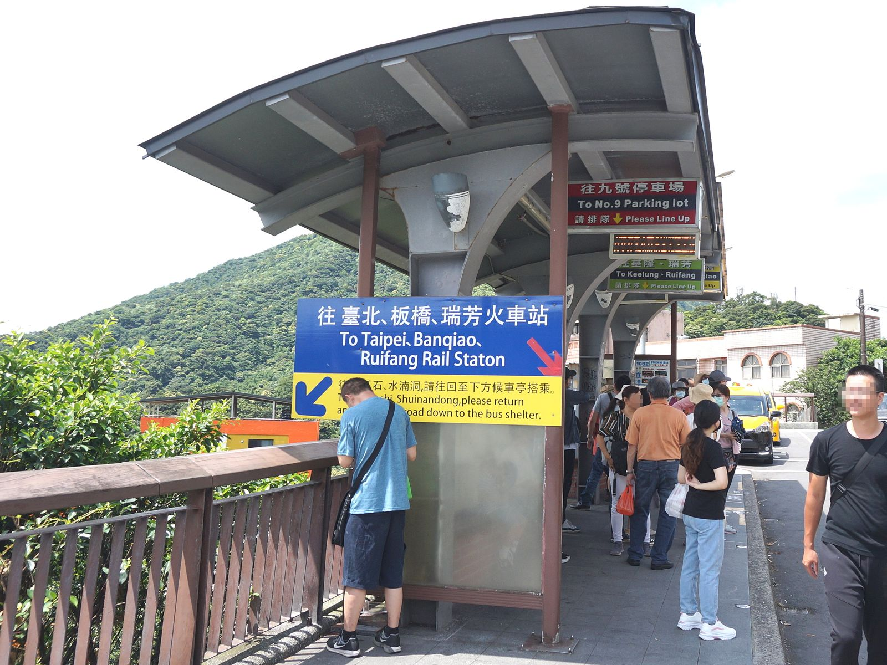
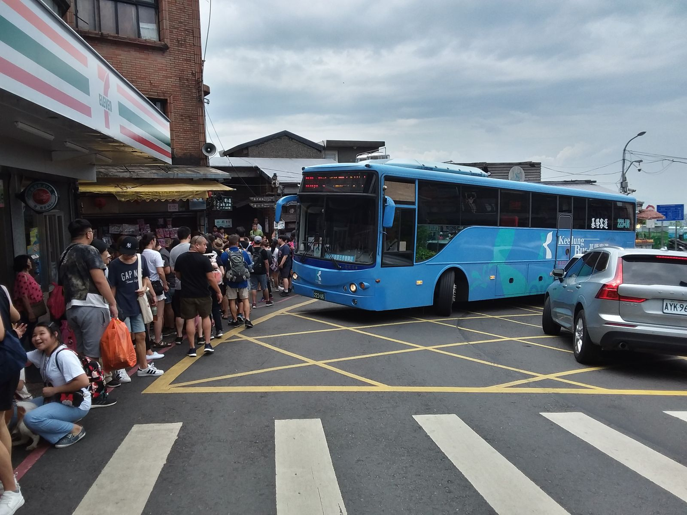

지우펀 965번 버스 일요일, 줄 서기와 돌아오는 정류장은?
주말엔 타는 곳에서도, 돌아오는 정류장에서도 줄을 서요 — 내릴 곳과 돌아올 곳만 알면 덜 헤매요.
게시
"일요일에 지우펀 965번 버스 타도 괜찮을까요?" 일요일 오전 10시가 넘어 시먼 쪽 정류장에서 탔더니 줄을 서서 기다렸고, 가는 데 약 1시간, 오는 데도 약 1시간 걸렸다는 여행자 글이 있어요. 대臺北公車 노선 정보와 台灣好行(타이완 하오싱) 공식 시간표, 지우펀 정류장 사진을 바탕으로 일요일에 965번을 탈 때 알아둘 점을 2026년 10월 기준으로 정리해봤어요.
01 · 일요일 지우펀 965번 버스, 한눈에 보기
| 항목 | 내용 (2026년 10월 기준) |
|---|---|
| 주말 배차 | 공식 시간표상 예가일(주말·공휴일)은 10~30분 간격, 정시 출발만 공개하고 나머지는 상황에 따라 배차 |
| 타는 줄 | 일요일 오전에도 시내 정류장에서 줄을 설 수 있음(여행자 글 기준) |
| 걸리는 시간 | 여행자 글 기준 편도 약 1시간, 도로 사정에 따라 달라짐 |
| 내리는 곳 | 九份老街(지우펀 옛거리) 정류장, 九份派出所·代天府 다음 |
| 돌아오는 곳 | 같은 이름 九份老街 정류장 중 '往臺北' 표지가 있는 위쪽 정류장 |
핵심은 갈 때와 돌아올 때 정류장 이름은 같지만 서는 자리가 다르다는 점이에요. 대臺北公車 노선 정보의 정류장 좌표를 보면 타이베이 방향 九份老街 정류장은 지우펀 방향 정류장보다 동쪽으로 약 30m 떨어진 별도 자리예요.

02 · 일요일에 965번 탈 때 줄 서기
오전에도 줄을 각오하기 여행자 글에 따르면 일요일 오전 10시가 넘은 시간에 시먼 쪽 정류장에서도 줄을 서서 탔어요. 출발 정류장에 가까운 쪽일수록 자리가 남아 있을 가능성이 커요.
실시간 도착 정보 보기 공식 시간표에는 정시 출발만 나오고 그 사이 버스는 상황에 따라 다녀요. 대臺北公車(5284) 사이트나 앱에서 965번 실시간 위치를 보고 정류장에 나가세요.
베이먼역은 출구가 갈려요 台灣好行 시간표 안내 기준 지우펀 방향은 捷運北門站 2번 출구, 타이베이 방향은 1번 출구 쪽에서 기다려요.
주말엔 길도 막혀요 원글에서는 주말 지우펀이 투어버스가 들어가기 어려울 만큼 붐볐다고 해요. 편도 1시간에 여유를 더해 일정을 잡으세요.
03 · 九份老街 정류장에서 내린 뒤 동선
代天府 다음 정류장에서 하차 지우펀 방향 버스는 九份派出所 → 代天府 → 九份老街 순서로 서요. 옛거리 입구 쪽에서 내리려면 九份老街에서 내리면 돼요.
세븐일레븐을 기준점으로 정류장 근처 도로변에 세븐일레븐(統一超商 九份門市)이 있어서 일행과 만날 곳이나 돌아올 때 기준점으로 잡기 좋아요.
화장실은 조금 걸어서 원글 작성자는 세븐일레븐 화장실보다 옛거리 안쪽 계단 중간에 있는 화장실이 덜 붐볐다고 해요. 붐비는 시간이라면 옛거리를 걷다가 들르는 편이 나을 수 있어요.
내린 자리 사진 찍어두기 돌아올 때 정류장 위치가 갈리니, 내린 곳과 주변 간판을 사진으로 남겨두면 헷갈리지 않아요.

04 · 965번 버스로 타이베이 돌아오는 정류장
'往臺北' 표지가 있는 위쪽 정류장 원글 작성자는 돌아올 때 세븐일레븐보다 조금 위쪽 정류장에서 탔어요. 2020년 정류장 사진에도 '往臺北、板橋、瑞芳火車站' 표지와 함께 진과스 방향은 아래쪽 정류장으로 가라는 안내가 붙어 있어요.
돌아오는 길은 루이팡역 경유 대臺北公車 노선 정보 기준 타이베이 방향은 九份老街 다음 代天府·九份派出所를 지나 瑞芳火車站에 들른 뒤 捷運北門站으로 가요.
줄 선 노선 확인하기 같은 정류장에 다른 노선 줄이 따로 생기기도 해요. 줄 앞쪽 표지판이 965번(타이베이 방향)인지 보고 서세요.
막차보다 일찍 움직이기 일요일 저녁엔 돌아오는 사람이 몰려요. 원글 기준 돌아오는 데도 약 1시간이 걸렸으니, 막차 시간에 기대지 말고 여유 있게 정류장으로 가세요.
965번 타는 곳, 첫차·막차와 배차 간격은 지우펀 965번 버스, 타이베이 어디서 타고 얼마나 자주 올까?에 정리해 두었어요. 요일별로 얼마나 붐비는지는 지우펀 금요일 vs 일요일 글을 참고하세요. 내린 뒤 먹을 곳은 지우펀 맛집 지도와 지우펀 카페 목록에서 고르고, 옛거리 쪽 대만식 식당 메이핑 샤오츠(美萍小吃)처럼 상세 페이지에서 위치를 확인해 보세요. 둘러볼 곳은 지우펀 볼거리에 모아 두었어요.
지도에서 지우펀 맛집을 찾아보세요
965번 버스에서 내려 들르기 좋은 식당과 카페를 지도에 찜해두세요.